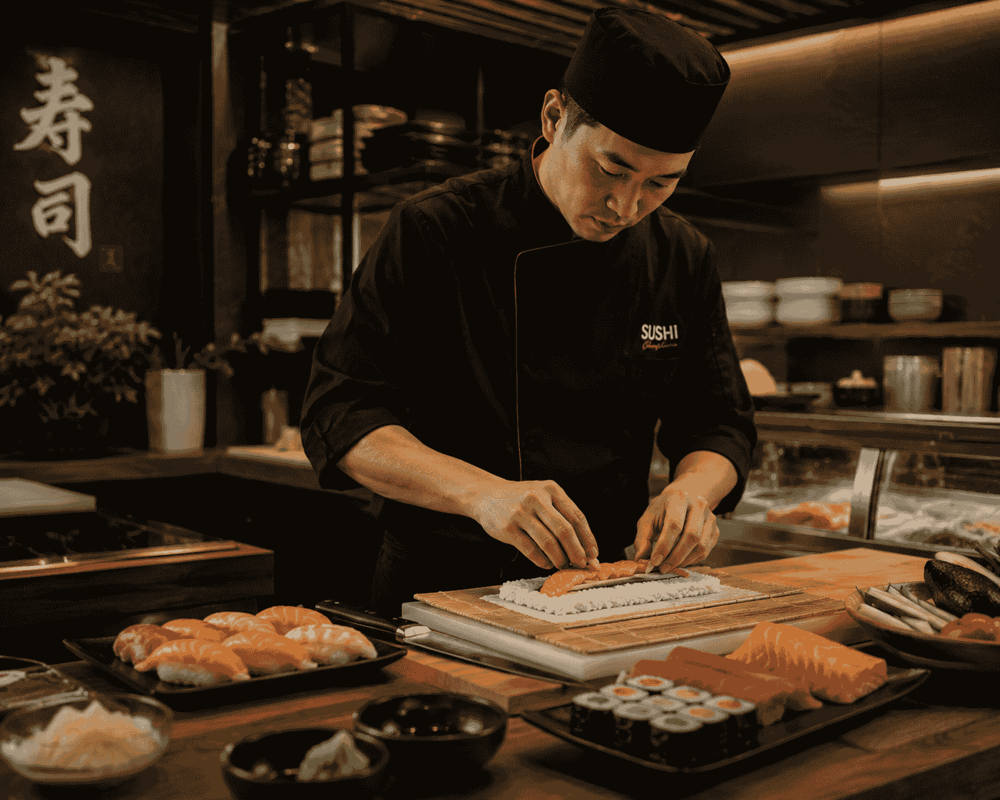
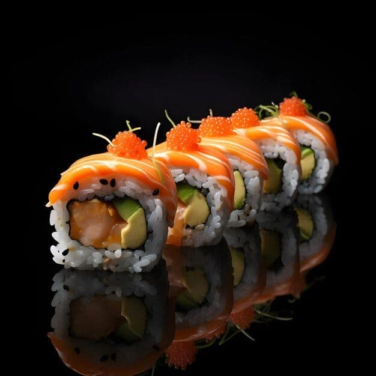

О Sushi‑Sunbeam
Философия бренда
Sushi‑Sunbeam — это сочетание японского минимализма, тёплой атмосферы и уважения к продукту. Мы верим, что роллы должны быть не только вкусными, но и эстетичными, а сервис — честным и предсказуемым.
Наши блюда создаются из натуральных ингредиентов, без лишних добавок, с акцентом на баланс вкуса и визуальную подачу.

История компании
Мы начали в 2020 году как небольшая кухня с доставкой в одном районе. Постепенно, благодаря рекомендациям гостей, Sushi‑Sunbeam вырос в полноценный сервис доставки по всему городу.
Сегодня мы продолжаем развиваться, сохраняя камерность и внимание к деталям, с которых всё начиналось.
Наши преимущества
- Прозрачные условия доставки и оплаты.
- Стабильное качество блюд и контроль свежести.
- Удобный сайт и быстрый выбор любимых роллов.
- Регулярные акции и бонусы для постоянных гостей.
